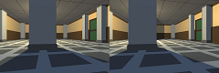

I would like to prove to you my fascination with games and everything that surrounds them:
their history and its consequences; their visual designs, their gameplay, and the technical elements that underpin everything.
Desert Dig is a short, tile-based puzzle game that I made in a week for a game jam. It placed #16 in the Game Design category out of over 700 entries
from around the world. You play as my attempt at drawing a meerkat in 8x8 pixels (harder than I expected),
and your aim is to reach the flag in each of the twelve levels without being spotted by an enemy.
The theme of the jam was "holes". As that was revealed, I started brainstorming ideas.
My first thought was "rabbit hole". I also considered golf - I thought that some kind of reverse golf might be interesting.
In the end, I correctly guessed that golf would be quite a popular theme, and stuck with the "rabbit holes" idea, changing the rabbit
to a meerkat since it's a less obvious choice for a burrowing animal.
Another idea stuck out to me: that of "digging yourself into a hole". This made me think of puzzle games, and a puzzle game seemed feasible.
Eventually, I arrived at the final concept: a stealth puzzle with both overground and underground movement, where you can block your own path
by digging holes.
Here is the concept for one of my favourite levels.
I planned each one out in a similar fashion, with arrows showing the correct path through the level:
red represents underground movement, while green represents overground. P is the player's starting position, F is the flag, E are enemies; B and D
are a button and a door. I tried to embody the idea of tricking the player into thinking the solution was obvious,
while it was really something more complex, to create the feeling of satisfaction that is a big part of the genre's appeal.
The version you see is not exactly the same as the one I submitted. To prepare it for my portfolio, I responded to some of the feedback that
I recieved during the jam:
I gave the rotating enemies red indicator arrows showing where they would turn next, to allow the player to better plan their next move.
I made the patrolling enemies leave behind some dust when they fall down holes to make it more obvious what happened to them.
I also decided to export the project to HTML5 rather than to a native executable so that you could play it more easily. However, this caused a
problem: a bug in Game Maker Studio's HTML5 compiler caused flags to check for the player before enemies could, allowing the player to beat level 9
far more easily than intended by going straight to the flag.
To account for this, I made a special flag object that makes sure to prompt all enemies to scan for the player before it lets them win.
Overall, I am satisfied with this project, but if I had more time, I would like to make more levels. The patrolling enemies have potential to be used
in many more interesting ways, and I would like to fully explore them. Had I had my time again, I would definitely have been less restrictive on myself
with the graphics: I wanted to make each sprite 8x8 and use only four colours, but that way I struggled to make some objects legible. I particularly
recieved comments that the flag is hard to see.
Depthmap Generation: a programming project
To test my programming ability, I decided to try and create a depthmap generation program without using machine learning. I thought it would
be an interesting challenge. In short, the program simulates binocular vision, generating estimated depth values for each pixel in a pair of images.
I wrote my code in Python, which turned out to be something of a mistake, since Python is quite slow, and my algorithm has a time complexity
of O(w²h), where w is the image's width and h is its height.
I tried to rewrite it using the CUDA GPU programming framework, which would have made things considerably faster using the graphics card's
concurrent processing, but my GPU was too old to run it.
It could definitely do with some work, but I like the concept. Here is an example result, which may not be the best depthmap in the world,
but it is certainly interesting.

Here's the output with the levels adjusted:
As you can see, in this simple virtual scene (which I found for free on the unity asset store), the algorithm demonstrates a respectable
understanding of near and distant objects, singling out the central pillar and the pillar on one side of the door. This example may not be
the best representation of the real world, as it has many similar colours which could have caused confusion, but it definitely shows promise.
What I'm working on now
Recently, I've been working on a game that's way outside my comfort zone. It's a 3D mobile game: I am far more comfortable working in 2D,
both graphicaly and technically, and I have never worked with touch input before. In fact, while I am familiar with the basic operation of
Unity, which I chose for this project for its useful features and its quick and easy mobile testing, I normally prefer its
alternatives for their ease of use. It is certainly challenging to learn all these things at once.
My inspiration for this game was a misleading mobile game ad. While the game it represented was a generic city builder, the ad presented
a unique real-time strategy game. Surprisingly, it seemed to have some great ideas about how to find a balance between the simplicity of
mobile RTS games (such as Clash of Clans's system for attacking other players' villages), and the strategic depth of PC RTSs (Supreme Commander,
Starcraft, etc.).
The nonexistent game seemed to allow the player individual control of each unit, but did not overcomplicate things this way: each unit could
only attack, and had no special abilities. I was intrigued by the concept of upgrading units by merging them: a common mobile mechanic that
could replace the upgrade system present in some traditional RTSs.
So far, I have managed to prototype the basic controls. I was insipred by the Pikmin series, particularly Pikmin 3's touchscreen
controls. They work as follows:
The player can pan and zoom with two fingers, within certain limits.
If they touch a unit with one finger, then move their finger elsewhere and lift it, that unit will move to the location where the touch
ended.
If their finger passes over other units before they release it, they, too, will move to the target location, standing nicely spaced out in a grid
formation.
Eventually, there will be an area in one corner of the screen such that, if the player lifts their finger there, the move order will be cancelled.
Once enemy units are added, if the player releases their finger over an enemy, an attack order will be issued instead.
Here is a short demo of the controls so far:
You may notice that towards the end of the video, the units do not take the perfect path, instead opting to move past each other. I have tried to fix
a few of these situations by generating the grid of positions, and then having each unit move to the nearest available position to them, but this was not
very effective. I will search for a solution to this issue.
To accomodate simple controls and gameplay, in line with the typical "pick up and play" format of mobile games, the tactics will be highly focused on
macro control (ordering units in big groups, rather than individually; units will not have many activated abilities), and choice of units. I would
like to use the system of collecting resources to produce units at a certain building that is common in PC RTS games. I will have to do some extensive
design work to create a game that aligns with my vision.
My Unity source code, and an APK for the demo in case you have an Android phone to hand and really enjoy moving cylinders around, are available
here.